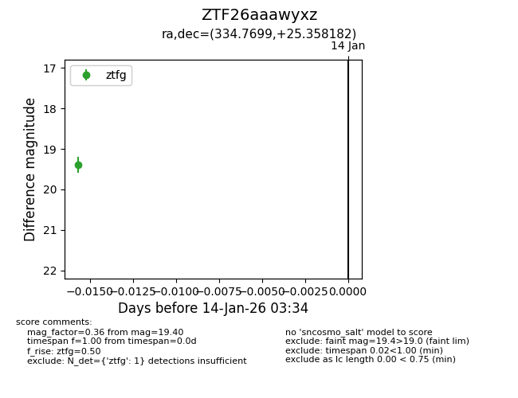
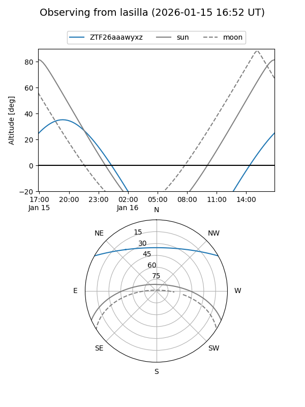
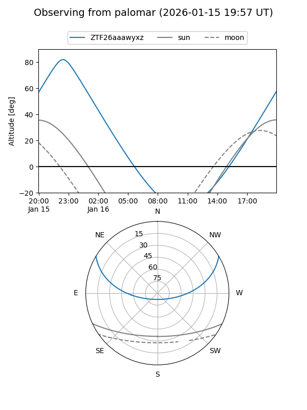

ZTF26aaawyxz
Target ZTF26aaawyxz at 2026-01-14 03:35
Aliases and brokers:
FINK: link
Lasair: link
ALeRCE: link
alt names
ZTF26aaawyxz (ztf,fink_ztf)
Coordinates:
equatorial (ra, dec) = 334.7699,+25.35818
equatorial (HMS+DMS) = 22:19:04.77,+25:21:29.46
galactic (l, b) = (84.6162,-25.95626)
Flags:
Photometry:
last ztfg=19.40
1 ztfg detections
Lightcurve

Visibility


Additional plots